01CORE
EKF3 без GPS
Экспериментальные изменения оценки ориентации и скорости при отсутствии спутниковой навигации.
NOAID ↗
A.T.L.A.S. — экспериментальная ветка ArduPlane с собственными алгоритмами ориентации, управления и автоматизации полёта. Создана для исследований, испытаний и сообщества разработчиков.
+ Интерфейс визуализации — иллюстрация, не текущая телеметрия
01 / FLIGHT INTELLIGENCE

Исследовательские возможности, созданные на базе ArduPlane. Каждый алгоритм развивается и проходит отдельные испытания.
Экспериментальные изменения оценки ориентации и скорости при отсутствии спутниковой навигации.
NOAID ↗Адаптированная логика старта, обнаружения полёта и переходов между режимами.
TAKEOFF ↗Разрабатываемые сценарии посадки без GPS. Требуют самостоятельной проверки на совместимость и отказоустойчивость.
AUTOLAND ↗Экспериментальный RUD_LIMIT_DEG: согласование ручного рудера и дополнительного крена.
RUDDER LIMIT ↗02 / FIRMWARE DISTRIBUTION

Здесь отображаются только реальные сборки, привязанные к конкретной плате. Пока файл не опубликован и не проверен, кнопка скачивания неактивна.
Не видишь своей платы? Не прошивай сборку для другой аппаратной ревизии. Совместимость зависит от target/hwdef, загрузчика и распиновки.
Как запросить поддержку ↗03 / DEPLOYMENT GUIDE

Не пропускай проверку аппаратной ревизии и резервное копирование параметров. Прошивка управляет реальными исполнительными механизмами.
Найди точную модель и ревизию полётного контроллера. Название должно совпадать со сборкой.
Экспортируй параметры и проверь инструкции по совместимости. Не переноси вслепую конфигурацию из другой версии.
Используй совместимый загрузчик и режим установки прошивки в Mission Planner. Проводить настройку — без пропеллера.
Проверь датчики, рули, направления, failsafe и режимы в SITL и на земле прежде, чем рассматривать полёт.
IMPORTANT / SAFETY NOTICE

A.T.L.A.S. не является подтверждённой заменой штатного ArduPlane для любых самолётов. Функции без GPS зависят от датчиков, модели полёта и калибровок. Наличие сборки для платы не означает проверенную безопасность конкретного самолёта.
04 / OPEN DEVELOPMENT

Релизы, изменения, отчёты о проблемах и обсуждения проекта будут доступны в репозитории. Документация развивается вместе с прошивкой.
Lead developer: Александр · AI copilot: CODEX
$ atlas info
PROJECT A.T.L.A.S.
BASE ArduPlane 4.7.2
LICENSE GPL-3.0-or-later *
CHANNEL experimental
LEAD Александр
AI CODEX
_
* Сохраняйте лицензии и уведомления исходных компонентов ArduPilot. Файлы сайта не содержат исходников ArduPilot.